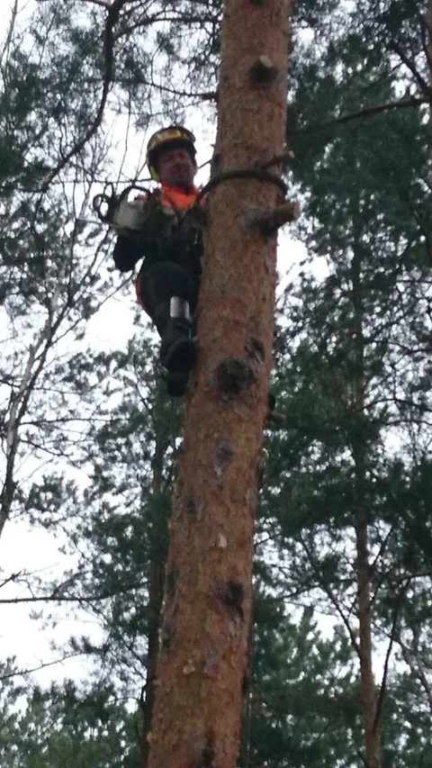
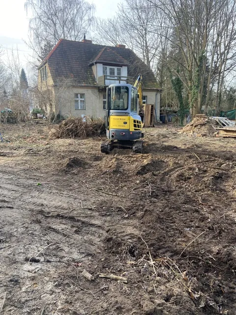
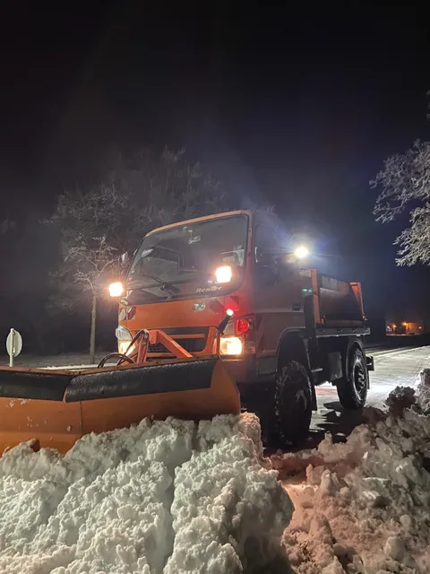
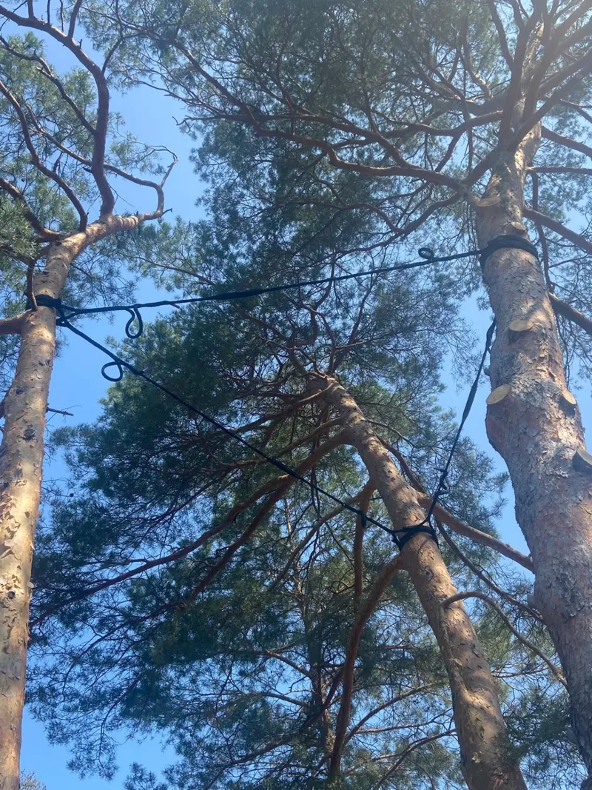
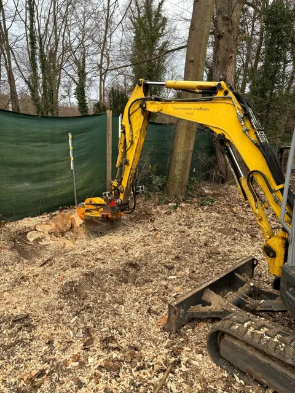
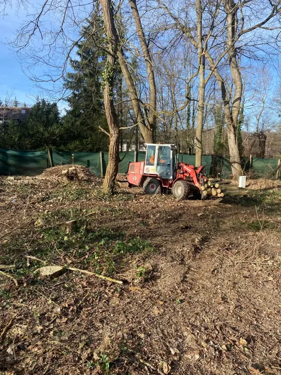
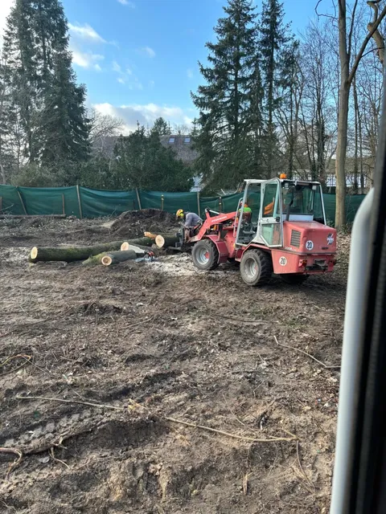

Baum-Land-Forst Service · Seddiner See
Baum Land Forst
Wir bieten Ihnen: Baumfällung, Baumpflege, Baumkontrolle, Winterdienst, Pflasterarbeiten, Neuanpflanzung, Grünflächenpflege und mehr.
Leistungsbereiche
Vom Baum bis zur Fläche
Baumfällung · Stubbenentfernung · Notfällung · Baumpflege · Kronensicherung · Baumkontrolle
Foto: Baumkletterer mit Motorsäge am Stamm einer Kiefer




Echte Arbeit · Baumpflege / Kronensicherung
Echte Arbeit am Baum.
Zur Baumpflege zählen auch die Entfernung von Totholz, Kroneneinkürzung, sowie Lichtraumprofilschnitte und auch der Einbau einer Kronensicherung.
Sturmschaden? Rufen Sie an.
0172 3841620Leistungen
Was wir für Sie übernehmen
-
Baumarbeiten
- Baumfällung, auch Stubbenentfernung und Notfällung
- Baumpflege, auch Kronensicherung
- Baumkontrolle
-
Grün & Forst
- Neuanpflanzung & Freistellen von Neuanpflanzung
- Grünflächenpflege für Kommunen
- Forstwirtschaftliche Pflege
-
Bau & Fläche
- Baufeldberäumung
- Pflasterarbeiten
-
Winter & Reinigung
- Winterdienst
- Straßen- und Flächenreinigung
Galerie
Einblicke in unsere Arbeit
Über uns
Baum-Land-Forst aus Seddiner See
Sicherheit an erster Stelle
Wir legen großen Wert auf Sicherheit – sowohl für unsere Mitarbeiter als auch für Ihre Umgebung. Unsere Arbeitsmethoden sind darauf ausgelegt, Risiken zu minimieren.
Standort Am Seehügel 1c, 14554 Seddiner See
Technik im Einsatz
-

Minibagger mit Stubbenfräse -

Kompaktlader mit Stammholz
Karriere
Wir suchen motivierte und engagierte Mitarbeiter, die unser Team verstärken.
Interessiert? Dann rufen Sie uns gerne an oder senden uns Ihre Bewerbungsunterlagen.

Kontakt
Haben Sie Fragen oder benötigen Sie ein unverbindliches Angebot?
Zögern Sie nicht, uns zu kontaktieren!
- Telefon 0172 3841620
- E-Mail info@blfservice.de
-
Adresse
Am Seehügel 1c
14554 Seddiner See